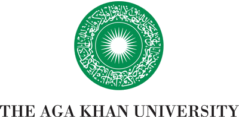

Full-Stack AI Engineer,
Awaaz-e-Sehat
·
National AI Hub
Jan 2025 – Present
National AI Hub
Gates Foundation
LUMS

Aga Khan University- Leading the end-to-end system architecture — speech, LLM, and RAG pipelines through backend services — for Pakistan's first voice-first LLM maternal-healthcare assistant for low-literacy women.
- Part of the Gates Foundation–funded National AI Hub at LUMS, Pakistan's first AI platform for Maternal, Newborn & Child Health (MNCH), with Aga Khan University as clinical partner.
- Driving iterative field testing and LLM evaluation with rural users, translating literacy, device-sharing, and cultural findings directly into model and system design.
- Mentoring junior engineers and students on LLM evaluation, system design, and responsible AI.